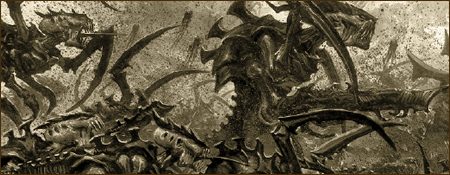
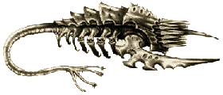
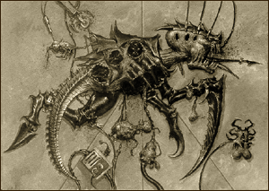

| |
A Behemoth Tyranida Kaptárflotta
hiteles története
Második rész

“Még ha adtunk is
nevet neki, a legtöbb ember mit sem tud a Mindent
Elnyelõrõl. Minden gondolat és tett, az élet
minden szikrája a Tyranida fajon belül egyetlen
hatalmas elme, egy óriási lény része, aki fényévek
óta úton van, s akit egy halhatatlan, közös
kaptártudat irányít. Számtalan alkalommal,
milliárdnyi Tyranida állt a galaxis peremén, mégis,
egyikük sem volt több egyetlen sejtnél a közös
tudat élõ testében. A világok elnyelõjének
testében…”
A kódex információiból minden kétséget
kizáróan kiderült hát, hogy a bolygó, amelyre
az inkvizítor leszállt a Tyran volt egykor.
Kryptmant elképesztette a pusztítás mértéke.
Micsoda iszonyatos hatalom az, amely képes néhány
hónap leforgása alatt sivataggá tenni egy egész
bolygót? Nem volt kétséges többé, hogy a
Tyranida flotta minden eddiginél nagyobb fenyegetést
jelent a Birodalomra nézve. Ha nem sikerül
feltartóztatni és megsemmisíteni az idegeneket,
hamarosan az egész galaxis kopár, ûrben sodródó
szikladarabok halmazává válik.
Mit tehetett volna, az inkvizítor
elindult vissza a Föld felé, hogy személyesen
jelentse az eseményeket az Inkvizíció Tanácsának.
Amint a hajó navigátora felkészült, hogy átlépje
a valós világ és a hiperûr határát, az érzékelõk
hirtelen egy másik tárgy közeledtét érzékelték.
Az ismeretlen objektum igen lassan mozgott, szinte
csak sodródott az ûrben, az emberek szívét összeszorította
félelem. Attól féltek, hogy az idegen flotta
valamelyik borzalmas jármûve tûnt fel. Ha be
akartak lépni a hiperûrbe, nem kerülhették el,
mivel értékes napok vesztek volna kárba, ha
arra várnak, hogy a másik olyan messzire távolodjon,
hogy már ne keresztezze pályájukat. De csak egy ûrhajóroncs
volt, egy kutatóhajó roncsa, amelyet visszaúton
a bázis felé ért utol a végzet. Az ûrben sodródó
jármû burkolatát hatalmas sérülések, lövésnyomok
tarkították. A test több helyen is megolvadt,
ahol a plazma reaktorok találatot kaptak.
Kryptman és néhány embere óvatosan
átszálltak a roncsra, hogy átkutassák. A hajó
teljesen kihalt volt, üres helyiségeiben nem találtak
semmilyen nyomot, amelybõl kiderülhetett volna,
hogy mi történt a legénységgel. Több ajtót
és falat darabokra szaggatott valami ismeretlen
erõ, a memóriatárolókat és az irányítóberendezést
összetörték. Az egyetlen nyom, ami a támadókra
utalt, a hajótest sebei voltak. Ezeket nem lézerágyúk
vagy plazmavetõk tüzes lövedékei okozták,
hanem Savak nyomai voltak, azoké a savaké,
amelyeket Magos Varnak kódexe szerint a Tyran hajóival
is végeztek.
Kryptman utasítást adott az astropatájának,
hogy Alfa prioritású üzenetet küldjön az
Inkvizíció Tanácsának a földre, és azonnal
figyelmeztesse õket a veszélyre, amit a tyranidák
jelentenek az ûrhajókra és az emberek által
lakott világokra nézve. Az üzenet továbbítását
azonban lehetetlenné tette a hipertérben
keletkezett zavar, amely az astropata szerint
olyan jellegû volt, mint amit az ûrhajók
keltenek, csak sokkal erõsebb. Egy órányi kísérletezés
sem hozott eredményt, még a legközelebbi
Thandroson lévõ állomás sem volt elérhetõ.
Az inkvizítor utasította a navigátort, hogy irányítsa
a hajót a Thandros felé. Útja során Kryptman három
alkalommal találkozott elhagyott roncsokkal.
Sajnos nem volt idõ átvizsgálni õket, de amúgy
sem találtak volna egyebet, mint az elsõ áldozatul
esett hajót.

A thandrosi Adeptus Astra Telepathica állomás
a rendszer legbelsõ bolygója, a Thandros I. körül
keringett orbitális pályán. Alig száz adeptus
élt itt. Az állomás a Birodalom délkeleti területei
felõl érkezõ telepatikus üzeneteket erõsítette
fel, és továbbította a Föld felé. A Thandros
I-nek túl ritka légköre volt, ami alkalmatlanná
tette arra, hogy kolóniát létesítsenek rajta.
Viszont a rendszer második és harmadik bolygóján
értékes érceket találtak, emiatt kisebb bányásztelepülések
épültek a felszínûkre. Amint az inkvizítor
hajója kilépett a hiperûrbõl, azonnal megkezdték
a kapcsolatfelvételt a bázissal, azonban válasz
most sem érkezett, csak a világûr suttogott
csendesen. A Thandros II-t és III-at az érzékelõk
segítségével az ûrbõl átvizsgálták, de életnek
semmi jelét nem találták. Mindkét égitest
elveszítette azt a kevés légkörét, ami volt
neki, és teljesen kiszáradt. Egy héttel késõbb
az inkvizítor az állomás területére lépett.
Mint a hiperûr határán talált hajóroncsban,
itt is törmelék és pusztulás fogadta. Mindenütt
lövésnyomok és savak által szétmart burkolati
elemek. Látszott, hogy az astropaták az Istencsászár
kápolnájában szorultak be és védekeztek,
azonban sehol sem találtak holttesteket. A bázis
gravitációs rendszere még mûködött, így
semmiképp sem sodródhattak ki az ûrbe. A legénység
nekilátott, hogy rendbe hozza az állomást legalább
annyira, hogy az inkvizítor leadhassa a jelentéseit.
Kryptman ezalatt a folyosókat járta. Miután a
nyomáskiegyenlítõt rendbe hozták, és az erõsebben
sérült folyosószakaszokhoz is hozzáfért,
megtalálta amit keresett. Az egyik válaszfalban
óriási lyuk tátongott, ennek csipkézett, szétmart
peremére egy darabka tapadt valamelyik támadó
testébõl. Áttetszõ folyadék cseppjei szivárogtak
belõle, melynek összetevõire vonatkozólag a
hajó adatbankja nem tudott választ adni.
Emberfeletti erõfeszítések árán
sikerült rendbe hozni az állomást, és az
astropata továbbította Kryptman jelentéseit a
Tyran és a Thandros pusztulásáról, valamint az
ûrben sodródó roncsokról. Végül több napig
tartó folyamatos kommunikáció után a halálosan
kimerült astropata megkapta az Inkvizíció utasításait:
Kryptman azonnal induljon útnak a Macragge bolygóra,
az Ultragárdisták rendjének birodalmába. Vegye
fel a kapcsolatot a rend nagymesterével, segédkezzen
az idegenek hollétének felderítésében és
megsemmisítésében. A Birodalom hagyományainak
megfelelõen a tyranida kaptárflottát pedig egy
õsi, tiltott névvel ruházták fel: Behemoth.
Az Inkvizíció Tanácsától kapott
utasítások értelmében Kryptman inkvizítor
felkereste az Ultragárdisták nagymesterét, hogy tõle
telhetõen a segítségére legyen az idegen
rettenet felszámolásában és az Istencsászár
nevében vigyázza a hadjárat tisztaságát.
Marneus Calgar, a rendház vezetõje Macragge
bolygóján, Hera csillogó tengerei fölé
magasodó, fehér márványból épült palotájában
fogadta az inkvizítort. A nagymester még a
genetikai úton megváltoztatott testû ûrgárdisták
között is óriásnak tûnt. Átható tekintetét
semmilyen részlet nem kerülhette el, még
Kryptman baljóslatú hírei sem tudták
kibillenteni nyugalmából. Calgar elmondta, hogy
az inkvizítor által felkutatott adatokat nemcsak
az Inkvizíció tanácsa tanulmányozta mélyrehatóan,
hanem a Mechanicus kultusz Magos Biologisa is. Az
alatt az idõ alatt, amíg az inkvizítor hajója
a hiperûrben tartózkodott, nem érkezett jelentés
lakott bolygók elleni támadásokról, azonban újabb
elpusztult hajókat találtak, melyek helyzetébõl
következtetni tudnak a kaptárflotta haladási irányára.
A tyranida flotta hamarosan eléri Ultramart, és
ha nem sikerül megállítani õket, a Földet is.
Ekkor kis felderítõ hajókból álló flottillát
indítottak útnak, hogy kövessék figyelemmel a
tyranidák elõrehaladását.
Néhány héttel késõbb egy túlélõt
szabadítottak ki a Galactis Luxor csillagközi
utasszállító, egyik mentõkabinjából, amely a
Macragge rendszer peremvidékén sodródott. A
fiatal tisztviselõ, aki a hajó legénységéhez
tartozott, szemtanúja volt az idegenek támadásának.
A hajó kénytelen volt elhagyni a hiperûrt,
amikor ismeretlen örvényléssel került szembe.
A navigátor nem tudta feltárni a zavar mibenlétét,
úgyhogy jobbnak látta, ha megszakítja a hajó
útját, és biztonságba helyezi, ameddig az örvénylés
alábbhagy. Egy felderítetlen aszteroidamezõ
peremén léptek ki a valós ûrbe, legalábbis a
legénység annak hitte a láthatárt betöltõ
lebegõ tárgyak halmazát. Aztán az aszteroidák
közül néhányan nagy sebességgel megindultak
az ûrhajó felé, és mielõtt a legénység észbe
kaphatott volna, a hajótest már három vagy négy
helyen megrongálódott. Ahol a jármûvet találat
érte, a burkolat olvadni kezdett, mint a viasz,
és a hajóból gyorsan szökött a nyomás. A
tisztviselõ nem tudott az ûrruhákhoz férni, ezért
megkereste az egyik életmentõ kabint és kilõtte
magát. A hajótól távolodva látta, ahogy az
egyik idegen jármû testébõl csápok nyúlnak
ki és ráfonódnak a Luxorra. A tyranida hajó,
amelyet a fiatal tisztviselõ leírt, élõ
szervezetnek látszott, azonban egészen más felépítésû
volt, mint amilyenrõl Magos Varnak adatkódexében
említést tettek. Ennek az élõ jármûnek sápadt,
csontszerû orr része volt, amely élénk színekben
pompázó, bordázott lemezekbõl eredt. Élettõl
lüktetõ, gyémántpikkelyes húsán inak és
izomkötegek feszültek. Helyenként sötét üregek
váltak láthatóvá rajta, melyekbõl csak következtetni
lehetett az alattuk rejlõ félelmetes
fegyverekre. Végül a csápok szorításában
tehetetlenül küszködõ Galactis Luxor eltûnt a
teremtmény belsejében.
| 
|
Szintén elõkerült ebbõl az idõszakból
egy má- sik adat is, amely teljesen más megvilágításba
helyezte a kaptárflottáról szerzett addigi
ismereteket. Ez egy jelentés, amelyben egy másik
kifosztott hajóról tesznek említést. Az Ellenség
Pörölye nevû fregatt roncsán ugyanis megtalálták
az egyik idegen lény teljes egészé- ben megmaradt
tetemét. A tyranida test vizsgálatát az Inkvizíció
egyik elszigetelt erõdjében, a Talasa Prime-on végezték,
az Adeptus Mechanicus Magos Biologisainak a részvételével.
Kiderült, hogy valójában nem |
|
| is egy, hanem két
tyranida flotta pusztítja a galaxist. A bizonyítékot
a két különbözõ helyszínrõl, a Thandrosról
és az Ellenség Pörölyének roncsaiból begyûjtött
anyagok szolgáltatták, melyeknek mélyebb,
genetikai mintázataik mutatnak némi hasonlóságot,
valójában azonban két különbözõ teremtményrõl
van szó. |
Az eredmények ijesztõek voltak. A támadások
színhelyeit és az adatokat az új információk
birtokában újra kielemezték, és a következõ
eredményre jutottak: a Behemoth kaptárflotta
legalább két külön flottából áll, amelyek
egymást megelõzve haladnak tovább. Ahogy az
egyik flotta megállt, hogy lerohanjon egy-egy
csillagrendszert, a másik nyomban folytatta az elõrenyomulást
a következõ felé. Bebizonyosodott, hogy amit
kezdetben titokzatos, de elszigetelt fenyegetésnek
hittek, az valójában a legnagyobb veszély,
amely a Birodalmat az elmúlt tízezer év alatt
fenyegette.
Az egész galaxis háborúra készült.
A Császár parancsára a Segmentum Tempestus
hadiflotta elhagyta a Bakka orbitális kikötõit.
A Macragge bolygót lassan ûrben lebegõ erõdök
gyûrûje vette körül, ahogy sorra megérkeztek
az Ultragárdisták szállítóbárkái és a
rendszer legtávolabbi vidékeirõl visszarendelt
óriási csatahajói. Calgar tudta, hogy a rendház
flottája egymaga nem képes ellenállni a
tyranida inváziónak, azonban nem volt más választás:
ki kellett tartani, amíg a birodalmi hadiflotta
megérkezik.
Egy feszült hónap telt el, majd a
rendház szolgálatában álló astropaták
elkezdtek rémálmokról jelentést tenni. Az
astrotelepátia használata egyre nehezebbé vált,
majd végül teljesen megszûnt. A kis felderítõhajókból
álló csapat, amely a rendszer peremvidékét
figyelte, néhány nap múlva riadójelzést adott
le, mert felfedezték, hogy rengeteg tárgy lép
ki a hiperûrbõl nem messze a Circe-tõl, a
rendszer legszélsõ bolygójától. A kaptárflotta
megérkezett. A tyranida bio-hajók testén nyílások
támadtak, melyekbõl opálszínû hártyák türemkedtek
ki, és a rendszer napja felé fordultak, hogy
felfogják a belõle érkezõ sugárzást, mielõtt
továbbhaladnának. Ezek a jármûvek inkább a
Tyran mellett megfigyelt sötét, tiltott kinézetû
tárgyaknak látszottak, mintsem a Galactis Luxor
túlélõje által leírtakra. A kaptárflotta a
birodalmi felderítõk sorozatos támadásaitól kísérve
elindult a rendszer belsejébe.
A Segmentum Tempestus érkezésére nem
lehetett egy hónapnál elõbb számítani, így
Marneus Calgar kénytelen volt elindítani az
Ultramar flotta ötven nagyobb csatahajóját,
hogy próbálják meg a lehetõ legnagyobb pusztítást
végezni az ellenfél soraiban. Calgar óvakodott
attól, hogy közelharcba keveredjen a tyranidákkal.
Eleinte csak a bolygóvédelmi lézerágyúkkal lövette
az ellenséget, legalábbis azokat a jármûveket,
amelyek a lõtávolságon belülre közeledtek.
Bizonyos idõ elteltével azonban a tyranidák kívül
maradtak a védelmi rendszer ágyúinak hatótávolságán,
ezért elkerülhetetlen volt a hadihajók bevetése.
Az ultragárdista flotta gyors támadásai és
gyors tûzereje megtette a hatását, több
tyranida jármûvet is sikerült elpusztítani,
azonban hosszú távon képtelenség volt távol
tartani az idegeneket a bolygótól. Hamarosan élõ
leszállóegységek ezrei töltötték meg a
Macragge egét. A bolygóra telepített védelmi
rendszer hiába próbálta meg kilõni õket,
egyszerûen túl sokan voltak. A földet ért tárgyakból
idegen lények másztak elõ, és megindultak az
emberlakta települések felé. A védelmi
rendszer és az ûrgárdista flotta kereszttüzében
a tyranidák elõrenyomulása megtorpant, majd
lassan távolodni kezdtek a bolygótól. Bár a
birodalmi flotta sikeresen visszaverte a bolygó körül
az idegen flottát, közben óriási veszteségeket
szenvedett. Calgar azonban aggódott, hogy az
ellenség megtámadja a rendszer valamelyik lakott
bolygóját, ezért a hadra fogható hajókat a
menekülõk után küldte. Ekkor érkezett meg a
hiperûrbõl a Segmentum Tempestus flotta, amely
útját állta az idegeneknek. A két tûz közé
szorított ellenséget még így is csak nagy véráldozat
árán sikerült teljesen megsemmisíteni. A
Tempestus flotta több, mint kétezer hajóját és
a Császár osztályú Dominus Astrát magával
vitte a pusztulásba a soha nem látott idegen
faj, mindössze az Ultragárdisták néhány hajója
élte túl az összecsapást.
Lent, a Macragge felszínén szintén véres
csaták dúltak. Az idegenek leginkább a bolygó
sarkvidéki védelmi erõdje mellett értek földet,
és azonnal támadásba lendültek, hogy elpusztítsák
a bázis lézerágyúit. Az emberiség ekkor
szembesült igazán elõször az idegen gyilkológépekkel.
A tyranida lények hihetetlenül erõsek voltak, képesek
voltak karmaikkal a legerõsebb páncélzatba öltözött
ûrgárdistát is darabokra tépni. Ellenállhatatlan
hullámként csaptak át az erõd falain, gyakran
elpusztult társaik tetemét használva védõpajzsként.
Az ûrgárdistákat elsöpörte az áradat, egyedül
a könyvtárosok pszi-támadásai akadályozták
meg, hogy az idegen hordák bevégezzék a mészárlást.
Viszont ahogy a tyranida vezér elpusztult, kisebb
társai megzavarodtak, és az emberek könnyûszerrel,
szinte ellenállás nélkül levadászhatták õket.
A csata végére az ûrgárdisták közül alig több,
mint egy szakasznyi harcos maradt életben. Az
Ultragárdisták elsõ százada az utolsó emberig
tartotta magát az erõd alsó szintjén, ahová késve
érkezett meg a felmentõ sereg, és ezt a veszteséget
a rendház soha nem tudta kiheverni.
A Behemoth kaptárflottát megállították,
de ez a háború óriási árat követelt. Az ûrgárdista
rendházak veszteségei miatt, lehetetlennek tûnt,
hogy a Birodalom egy újabb támadásnak ellent
tudjon állni. Márpedig a tyranidák teljesen
ismeretlen területrõl érkeztek, és ki tudja
nem bukkan-e fel egy újabb kaptárflotta az
intergalaktikus ûr végtelenjébõl?
A technomágusok éveket töltöttek a
Macragge-on maradt tyranida tetemek és tárgyak
osztályozásával, mégis eleinte igen kevés
eredményt tudtak felmutatni. Annyi azonban
bebizonyosodott, hogy a tyranida fegyverek és lények
nem kialakultak, hanem megtervezték õket. A
biotechnológiát élõ fegyverek készítésére
használták (leginkább rövidtávú és közelharci
fegyverekre), míg maguk a tyranidák számtalan külön
fajt alkottak, sokszínûbbet, mint a galaxisban
mindenfelé elõforduló orkok.
Az egyetlen igazán fontos felfedezés
azonban az volt, hogy fény derült az összefüggésre,
miszerint a tyranidák elõörsként használják
a génorzókat. Ezekrõl a teremtményekrõl eddig
azt gondolták, hogy az Ymgarl holdjainak õslakosai
voltak, és innen terjedtek el az egész
galaxisban. Most a tyranida hordák között is
feltûntek, és ez arra késztette a kutatókat,
hogy felülvizsgálják az eddigi téves nézetüket.
Genetikai vizsgálatok kiderítették, hogy a génorzók
is tyranida teremtmények. De akkor vajon hogyan
sikerült szinte észrevétlenül ilyen messzire
behatolniuk a galaxisba? Az Inkvizíció
elrendelte az Exterminatust az Ymgarl holdjainak
megtisztítására, és az inkvizítorok fokozták
a génorzókról szóló jelzések vizsgálatának
alaposságát, azonban többet nem tehettek. A
Birodalom várt. Várt, és reménykedett…
írta: Gabesz (Troll magazin,
2. évf. 11. szám)
|
|